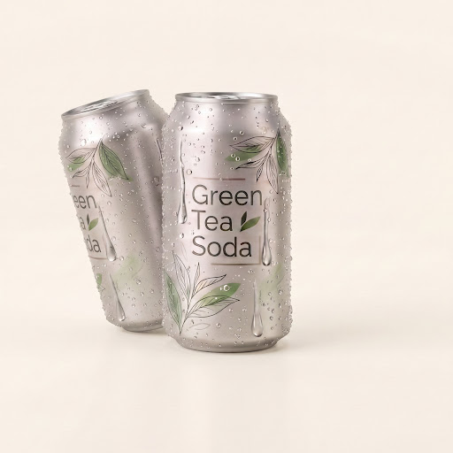
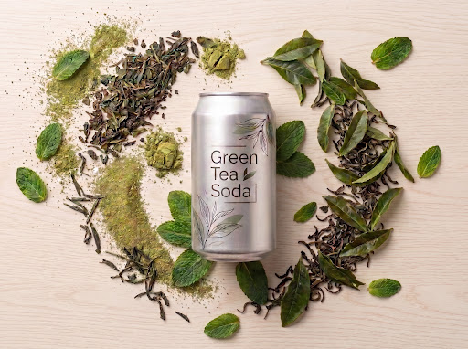
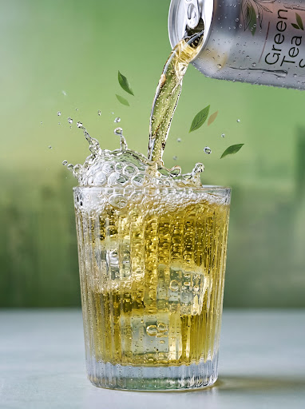
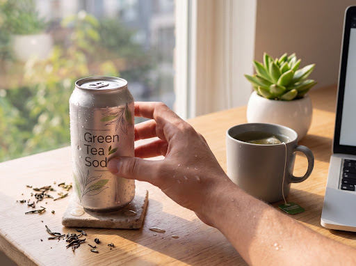

SIT DOWN. SAY NOTHING.
JUST DRINK THIS.
Cold-brewed shade tea, real mint, and small, quiet bubbles. Made so you can take five minutes back without needing caffeine to hand them over again later.
220mg L-theanine, the calming compound already found naturally in tea leaves
0g sugar added
Soft, slow bubbles — not the kind that bite
Grown in the shade, in Uji, Japan


Three things.
Nothing else.
Most sparkling teas are built from tea powder, sugar substitutes, and lab-made sourness. We used real leaves and real water instead, and left it at that.
Shade-Grown Tea
Kyoto, Japan
Covered from direct sun for three weeks before it's picked, the way it's been done there for centuries.
Real Mint
The hills of the Pacific Northwest
Picked fresh and steeped immediately. It tastes like actual herbs, not candy or toothpaste flavoring.
Spring Water
Granite bedrock filtration
Naturally filtered through granite. Mineral enough to give the tea backbone; clean enough not to get in the way.
How It's Made
The 21 Days Before We Pick Anything
Three weeks before harvest, black woven cloths are rolled out over the tea rows, cutting sunlight by more than 80 percent. The leaves fight for light by pumping themselves full of chlorophyll and L-theanine — the amino acid that gives shade tea its rich, savory calm.

Bubbles Done Differently
Most sparkling drinks are hit with high-pressure carbonation right before canning — the kind of fizz that stings your tongue and masks the actual flavor of the liquid. We carbonate slowly, at lower pressure and colder temperatures, so the bubbles stay tiny.

The 2pm Problem
You know the feeling: two in the afternoon, focus is gone, and the reflex is to grab another coffee. It works for thirty minutes, and then you're more tired than when you started. A single can of Green Tea Soda carries 220mg of natural L-theanine.

Where the Can Goes After You're Done With It
This part we can actually prove, not just claim. The can is aluminum, start to finish — no plastic lining hidden inside it — so it can be melted down and remade again and again without losing quality. Most cans like ours are back on a shelf in some new form within two months of being recycled.
The sound of slowing down
Nothing forces a pause quite like the sound of a cold can opening. That crack, that quiet fizz settling — most people don't notice how much they've missed it until they hear it again.
THE SENSORY PAUSE
Here's what we can actually prove
We'd rather hand you numbers than tell you a story.
of CO₂ already offset — audited by an outside group, not us
how long it takes a used can to come back as a new one, on average
of our tea comes from one family farm we've visited ourselves, twice a year
LAB NOTE
No sugar. No stevia. No monk fruit quietly doing sugar's job. Every batch gets tested by an outside lab, not just our own team, so what's printed on the can is what's actually inside it.
Order your first batch
Each batch is small on purpose. It's canned in Kyoto, sealed cold, and shipped within two days of that seal going on.
12 Cans
Enough to find out if this becomes part of your week.
24 Cans
Most people start here. The better deal, if you already know you'll want more than one case.